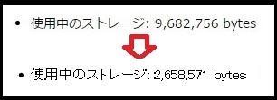

TOPに戻る
もちフィルタ（広告ブロック）
フィルタを購読する
(github)
(
中身を見る
)(github)
もちフィルタの特徴
軽量な
広告ブロックフィルタ。
サイズが小さい＝
使用メモリが少ない
使用メモリ：もちフィルタは
2.6MB
（比較として、EasyList+EasyPrivacy+豆腐では
9.6MB
）

もちフィルタは、EasyListと豆腐フィルタから必要最小限のフィルタを抜き出したもの＋高速化（※）。
（※）正規表現を減らした。要素フィルタを適用すべきサイトに限定した。
ページをもちのように白くキレイにする。
もちフィルタの方針：普段よく見るサイトだけフィルタできればよい。たまにしか見ないサイトは別に広告が出ても良い。
EasyList、EasyPrivacy、 豆腐、'JPN: AdGuard Japanese filter'をオフ
にして、その代わりに
もちフィルタをオン
にして使用してください。
もちフィルタ適用後は、購読されているフィルタは
このように
なります。
もちフィルタは、EasyList、EasyPrivacy、豆腐フィルタ、'JPN: AdGuard Japanese filter'ははずして使用されることを想定されていますが、同時に使用してもフィルタが重複するだけで問題はありません（と思う）。
できるだけ正規表現を使わないようにして処理を高速化しています。
中身を見るとわかりますが、
フィルタはサイト単位に記述されています。
ほぼ全てのフィルタにドメインを指定しているので
誤爆
はほとんどない。（はず……）
対応サイト：
Youtube：動画上の広告＋ページレイアウト上の広告
Yahoo!Japan：広告＋高速化
Twitter：広告
ニコ生＋ニコ動：広告＋高速化
５ちゃんねる、２ちゃんねる：広告＋高速化
価格.com：広告
ファミ通：広告
Impress：広告
AnimateTimes：広告
Weblio：広告＋高速化
Alc：広告＋高速化
Naverまとめ：広告
Wikia：広告
Dailymotion：広告
他
海外のサイトをよくアクセスする人は、
もち拡張フィルタ
も使用してください。
（「高速化」というのは、画面上の見た目の広告ではなく、内部で広告用スクリプトを読み込んでいるのを全て遮断して、余計な通信を発生させないことによって、速度向上させたことを意味しています。）
Q. 本当に軽量なのか？
もちフィルタは「普段よく見るサイトだけブロックできればよい」という方針により、「Generic Cosmetic Filters」（ドメイン指定無しの要素非表示。「##.ad」←こういうやつ）を最小限に抑えることができました。
「Generic Cosmetic Filters」は、アクセスしたすべてのページに対して毎回チェック処理が走るため、少なければ少ないほどメモリ、CPUにやさしくなります。（
参照
）
名前
Generic Cosmetic Filtersの数
JPN: AdGuard Japanese filter
72
豆腐
142
もちフィルタ
4
EasyList
19800
モバイル用
名前
Generic Cosmetic Filtersの数
280 Blocker
825
たまごフィルタ
2
もちフィルタの高速化のこころがけ
もちフィルタ掲示板
（名無し掲示板）
TOPに戻る
{kind=link}